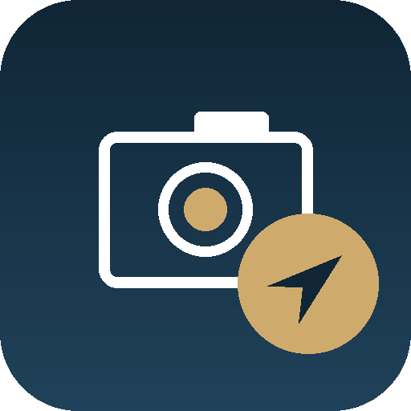

ContaClick
Vanessa Branco — Contabilidade e Finanças

ContaClick
O documento tem código QR (fatura, recibo...) ou não (guia da AT, outro papel qualquer)?
Para fixares no ecrã principal: toca em Partilhar (⬆) e depois em "Adicionar ao Ecrã Principal".
Passo 1 de 2 — Código QR
A abrir câmara...
Aproxima bem o telemóvel até o código QR ficar dentro do quadrado.
Documento completo
1 documento pronto
Enviar para:
Toca em "Enviar tudo" e escolhe o Gmail (ou Mail) na lista que aparece — não o WhatsApp, para o(s) documento(s) chegar(em) ao escritório. Confirma o destinatário acima antes de enviares (o telemóvel não o preenche sozinho).
Confirma o envio
- Os ficheiros foram descarregados para o telemóvel.
- Abre o teu email e cria uma mensagem nova para o endereço abaixo.
- Anexa os ficheiros e envia.
Enviar para:
...
Documentos enviados
Obrigado! Os documentos foram enviados para a contabilidade.
Não consegui aceder à câmara
Verifica se deste permissão de câmara a este site nas definições do telemóvel, e tenta outra vez.